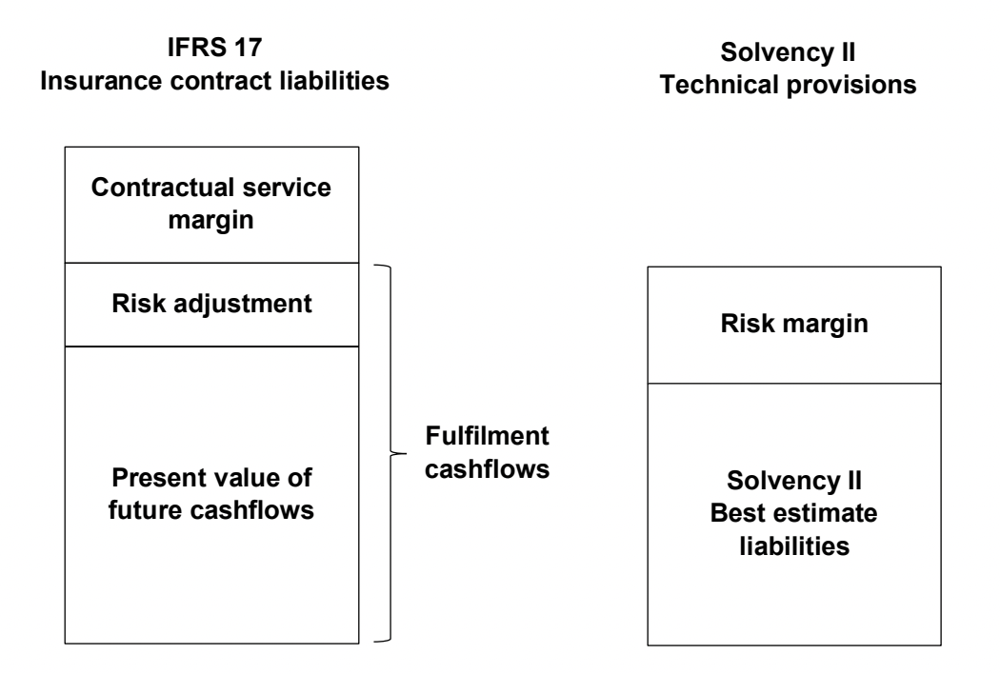

Profit reporting
Life insurers produce statements about their financial position and performance. The purpose of those statements, and the accounting standards used to prepare them, determine how assets and liabilities are measured and when profits emerge.
On this page
Overview
Financial statements
Life insurers will typically produce statements on their financial position and performance on a regular basis.
Information included in a company's financial statements will often include the following items:
The balance sheet - This details the value of the company's assets and liabilities at a particular point in time. The purpose of this is to demonstrate whether the company has sufficient assets to cover its liabilities.
The profit and loss statement - This details the revenue earned and expenses incurred by the company over a specified time period. The purpose of this is to show the size and source of profits earned by the company over the time period.
Detailed disclosures and commentary - These support the company's financial disclosures. For example, these might include details of the basis and methodology used to produce the financial statements.
Additional supporting information.
This may include a report from the company's auditor stating that they have:
Examined the company's financial statements.
Assessed whether these financial statements have been properly prepared.
Assessed whether the financial statements present a fair view of the company's results and financial position.
Reasons for disclosure of financial position
There are various reasons why a company might disclose its financial position.
They may disclose their financial position, for example, to:
Demonstrate that the company has sufficient assets to cover their liabilities; and/or.
Show the size and source of profits earned by the company over a period.
The reasons for disclosure will impact the basis on which the financial statements are produced. Disclosures with the purpose of demonstrating solvency may be prepared on a prudent basis. Disclosures intended to demonstrate profit generation may be prepared on a best-estimate basis (to show a 'true and fair view').
Reasons why good quality financial reporting is vital for an insurer include the following:
Assisting in initiatives to raise capital. External stakeholders will use the company's financial statements to assess their creditworthiness and the strength of their operations.
Reassuring stakeholders who use the statements to assess the company's financial position and future profitability/viability. Such stakeholders include shareholders, creditors, analysts, potential policyholders, and competitors.
To comply with regulation and legislation. Insurers may be required, by law, to produce regular financial statements for regulators, capital markets, and tax authorities.
In the UK, insurers are required to prepare both supervisory reports for the financial services regulator and (separately) profit reports tailored to the needs of shareholders and other external stakeholders. The supervisory reports are intended to demonstrate the insurer’s solvency position and their available capital to meet the risks they face. The profit reports (a.k.a the statutory accounts) are intended to demonstrate companies' profitability and value creation. These may include supplementary information on shareholder value.
Supplementary financial reporting
In addition to their required financial statements, insurers may also provide supplementary financial reporting.
The aim of these supplementary reports is to inform shareholders of:
The true value of their interest in the business.
The change in this value over time as a result of the company's management of their resources.
Accounting standards
Many decisions need to be made to produce detailed financial statements about a company's financial position. These decisions can materially impact the company's financial statements. Without any guidance, different companies could use very different approaches to producing their financial statements. This would make financial statements less comparable between similar companies and less credible for stakeholders. To address this issue, many countries have legislation dictating how companies should prepare their financial statements and what information they should include. Separately, there is also likely to be legislation in place requiring insurers to produce regular statutory accounts.
Accounting standards set out the principles and standards to be followed in the production of financial statements. The framework detailing companies' reporting requirements can include the accounting standards they are required to use in determining and presenting their accounts.
Although the relevant laws are passed by governments, accounting standards are often set and maintained by non-government bodies such as:
The International Accounting Standards Board (IASB).
The Financial Accounting Standards Board (FASB).
The two most adopted sets of standards are the:
International Financial Reporting Standards (IFRS), issued and maintained by the IASB.
US GAAP, issued and maintained by the FASB.
The nature of accounting standards will depend on the following:
The purpose of the reporting conducted using them.
The intentions of those who set the standards.
The intended users of the financial reports prepared using them.
Rules-based vs. principles-based approaches
Accounting standards are generally either rules-based or principles-based (or a combination of the two) and each of these approaches has their own advantages and disadvantages.
Principles-based approaches
Principles-based accounting standards allow companies to use discretion in the preparation of their financial statements to ensure that these statements reflect the nature, liabilities, and risk-profile of the company.
There are, however, some disadvantages associated with the discretion allowed by principles-based standards:
They can make financial statements more open to manipulation
They can make financial statements less transparent and comparable with other equivalent companies:
Different approaches for allowing for risk (e.g. the rate used to discount future cashflows or the margins used in the valuation basis).
Sensitivity analysis under different valuation assumptions may not be disclosed.
Different approaches may be taken to smoothing profit over contracts' lifetimes.
Differing levels of consolidation allowed for (e.g. across entities, netting of reinsurance/tax, etc).
They can make financial statements potentially more difficult to audit.
Both IFRS and US GAAP use principles based approaches, though US GAAP also contains more specific rules. Though principles-based approaches allow discretion, they still include rules to minimise the variability in the approaches taken.
Rules-based approaches
Rules-based accounting standards are a more standardised system of financial reporting with less discretion.
For example, they may prescribe specific rules about how certain items in a company's financial statements are calculated or defined. These approaches may increase accuracy in financial statements and make it easier for investors to compare the performance of different companies.
However, rules-based accounting standards can include highly complex rules. This can make production of financial statements more difficult and costly. However, this can also make financial statements easier to audit.
Other considerations
Other important issues to consider in the preparation of financial statements include the following:
True and fair - In many countries, it is a requirement that financial statements show a 'true and fair view' of a company's position. In particular, the statements should be free from material misstatements and accurately represent the financial performance and position of the company.
Going concern vs wind-up basis - It needs to be determined whether financial reporting should be conducted on a going-concern or a wind-up basis. A going-concern basis assumes that the company will continue operating for the foreseeable future. A closed insurer can still be a going concern; continuing to write new business is not essential. A wind-up basis assumes the company will be wound up. Which of these bases should be used depends on what is being measured (e.g. measures of solvency may be concerned with a wind-up event, whilst measures of profitability are more likely to use a going-concern basis).
Best estimate or prudent basis - Judgement will be needed in determining whether items in the financial statements should be calculated using a best estimate or prudent basis.
Uncertain assumptions which may be set on a best estimate or prudent basis include:
The likelihood and amount of future claims.
Customer behaviour (e.g. persistency, option exercises, etc).
Future market returns.
Financial reporting standards that relate to demonstrating solvency are concerned with risk and are thus more likely to require the use of a prudent basis than those relating to demonstrating the emergence of profit over time. Many older accounting standards require (or allow) prudence in assumptions, whilst newer standards tend to require best estimate assumptions with an explicit amount held to allow for uncertainty in the amounts and timings of risky cashflows.
Profit accrual - Profit and loss is typically recognised in the period in which it is accrued, but the date of accrual can be ambiguous. That is, profit/loss should be allowed for at the time it is earned or incurred, rather than the point at which it is actually paid or received. For life insurance policies, which are expected to remain in force for a long period of time, it can be particularly difficult to determine when profit arising on a policy is actually 'earned'. The profit could be recognised at the point of sale, at the end of the contract, or over the term of the contract.
Accrual accounting recognises income and expenses in the periods to which they relate. It does not give management a general permission to smooth earnings. Where policyholder benefits are smoothed, that feature is reflected in measurement under the applicable accounting rules.
Timeliness - Users of financial statements require information to be available as soon as possible. There may, therefore, be a need for compromise between timeliness and complexity of reporting. Newer accounting standards tend to reflect recent technological advances and often require complex calculations to be performed quickly.
Comparability - Financial statements are most useful to stakeholders when they can be easily compared to the financial reports of other (similar) companies. Statutory reporting standards are more likely than regulatory/internal reporting standards to require consistency across companies of many industries. This is because such comparability is of particular use to investors, who may be considering companies in many different industries when deciding where best to invest their capital. However, it is difficult to prescribe accounting standards that ensure consistency/comparability in all cases.
International considerations
Accounting standards can be specific to the country a company is based in, or the same standards could apply to companies in a number of countries.
Many countries also have specific rules relating to the financial reporting of specialised businesses such as insurance.
Companies may be required to produce financial statements in multiple countries.
This will often be the case for companies who:
Raise capital in multiple countries.
Undertake transactions in multiple countries.
Have international operations.
As such, companies may need to produce financial statements under multiple different accounting standards (which may be costly and complex).
International financial reporting standards (IFRS)
International Financial Reporting Standards (IFRSs) are standards relating to companies and other entities which prepare accounts intended to show a true and fair view of the companies' position and performance.
IFRSs are developed, issued, and withdrawn by the International Accounting Standards Board (IASB). The IASB has no authority to require compliance with IFRS accounting standards, but many countries require companies to prepare financial statements in accordance with IFRS. Such countries will typically require companies to give details of any material departures from these standards. The IASB also collaborates with national accounting standard setters in many countries to improve and harmonise financial reporting around the world.
The objectives of the IFRS accounting standards are the following:
Improving transparency of reporting by enhancing the international comparability and quality of financial information. This is intended to help investors (and other market participants) to make informed economic decisions. This should improve trust in companies' financial statements (and of the companies themselves) within global financial markets.
Strengthening accountability by reducing the information gap between providers of capital and those with whom they entrust their money. Similarly, IFRS accounting standards are of vital importance to regulators around the world. Reducing this information gap helps to improve investor protection and regulator oversight.
Contributing to economic efficiency by helping investors identify opportunities and risks across the world, thus improving capital allocation. For businesses, the use of a single, trusted accounting language lowers the costs of capital (by reducing information asymmetry) and reduces international reporting costs.
The IFRS standards are the most widely adopted reporting standards in the world.
IFRS is widely used internationally, including in the UK and EU. The scope of mandatory use and any local modifications differ by jurisdiction and by type of entity. There has not been complete global convergence of accounting standards. US domestic public companies use US GAAP; other countries may use national standards that are aligned with IFRS to varying degrees.
There are a number of different IFRS standards, which cover specific aspects of financial reporting for companies, including:
Financial instruments.
Insurance contracts.
Investment contracts.
Reporting and disclosure.
Financial assets
Financial assets on the IFRS balance sheet are valued in accordance with IFRS 9 ("Financial Instruments").
IFRS 9 specifies how an entity should classify and measure financial assets, financial liabilities, and some contracts to buy or sell non-financial items. For debt investments, IFRS 9 classification depends on the business model for managing the assets and whether contractual cashflows are solely payments of principal and interest. Assets may be measured at amortised cost, fair value through other comprehensive income (FVOCI), or fair value through profit or loss (FVPL). Equity investments are measured at fair value. An irrevocable FVOCI election is available for eligible equity investments not held for trading.
Other comprehensive income includes specified gains and losses that are presented outside profit or loss. Fair-value movements therefore do not always enter profit or loss immediately. Where there is an active market for an identical asset, its quoted price is an important basis for determining fair value. IFRS 9 also addresses impairment and hedge accounting. Related financial instrument disclosures are principally covered by IFRS 7. IFRS 9 replaced IAS 39, Financial Instruments: Recognition and Measurement. Its classification requirements may affect the volatility of reported profit and loss, depending on the insurer’s assets and accounting choices.
See the IFRS Foundation’s overview of IFRS 9.
Insurance contracts
Accounting for insurance contract liabilities is covered by IFRS 17.
IFRS 17 defines an insurance contract as 'a contract under which one party (the issuer) accepts significant insurance risk from another party (the policyholder) by agreeing to compensate the policyholder if a specified uncertain future event (the insured event) adversely affects the policyholder'. Examples of insurance risks include mortality, longevity, and morbidity risks. Most conventional without-profits policies are likely to be classified as insurance contracts. Unit-linked contracts may be classified as insurance contracts or investment contracts depending (primarily) on whether there is a significant additional death benefit payable.
With-profits policies are insurance contracts if they transfer significant insurance risk. Investment contracts with discretionary participation features also fall within IFRS 17 when issued by an entity that issues insurance contracts; this does not make them insurance contracts by definition.
Some insurance contracts include other features, in addition to the transfer of 'significant insurance risk', such as derivatives, deposits, and asset management services. Such features are known as 'non-insurance components'. Depending on the details, embedded derivatives in insurance contracts (e.g. financial options and guarantees) may have to be separated out from the insurance contract. Separated embedded derivatives and investment components are valued in the same way as investment contracts.
Investment contracts
Savings contracts that do not transfer significant insurance risk are generally investment contracts. Those with discretionary participation features may nevertheless fall within IFRS 17, as described above.
This would include, for example, unit-linked business with immaterial additional death benefits. The cashflows arising under unit-linked investment contracts are separated into an 'investment management services' component and a 'financial instrument' component. The investment management services component comprises any fund management charges, bid/offer spreads, surrender penalties, etc, as well as the costs incurred in managing the unit-linked contract. This component is measured in accordance with "IFRS 15: Revenue from Contracts with Customers". The financial instrument component is the insurer’s contractual financial liability to the customer, including relevant guarantees. Assets held to back that obligation are accounted for separately. This component is measured in accordance with IFRS 9.
In practice, accounting for such contracts differs from accounting for insurance contracts.
Reporting and disclosure
An insurer’s IFRS balance sheet will include the following:
Total assets - including the split of this into the following:
Financial assets.
Insurance contract assets, where applicable.
Reinsurance contract assets. Note that reinsurance contract assets (and liabilities) are reported separately to insurance contract assets and liabilities.
Total liabilities and equity - including the split of this into the following:
Insurance contract liabilities. Under the GMM and VFA, these include fulfilment cashflows and any contractual service margin (CSM). Insurance contracts issued and reinsurance held are presented separately, with asset and liability portfolios distinguished.
Investment contract liabilities.
Reinsurance contract liabilities, where applicable.
Other liabilities.
Equity. This includes both share capital and retained earnings.
IFRS 17 requires an entity to disclose information that allows users of financial statements to assess the effect that insurance contracts have on the entity's financial position, performance, and cashflows. An insurer must consider the level of detail required to satisfy the disclosure objective and how much emphasis to place on each of the various requirements. The disclosure requirements of IFRS 17 are more extensive and prescriptive than the previous disclosure requirements (under IFRS 4).
Examples of disclosure requirements under IFRS 17 include the following:
Reconciliation from the opening to the closing balance sheet. The reconciliations are required separately for insurance contracts issued and reinsurance contracts held. IFRS 17 sets out the components of the insurance contract liabilities that need to be disclosed.
Reconciliation from the net opening to the net closing of the following components of insurance contract assets and liabilities:
Estimates of the present value of future cashflows.
The risk adjustment for non-financial risk.
The CSM.
Significant judgements and changes in judgements made in applying IFRS 17.
This requirement builds on the information required to be disclosed under IFRS 4, including:
Information on accounting policies for insurance contracts.
The process used to determine material assumptions.
The effect of changes in assumptions.
Information that enables users of the financial statements to evaluate the nature, amount, timing, and uncertainty of future cashflows from insurance contracts. The risks typically expected to arise in such cashflows are insurance risk and financial risks (e.g. market, credit, and liquidity).
Some insurers who implemented IFRS 17 early emphasised to analysts that IFRS 17 is an accounting change which changes the recognition of insurance earnings, but that it does not impact the amount of earnings the company will make over the lifetime of the business. As such, the implementation of IFRS 17 may not change an insurer's strategy, solvency, or dividend policy. IFRS 17 applies to annual reporting periods beginning on or after 1 January 2023, with earlier application permitted if IFRS 9 is also applied.
Accounting for insurance contracts - IFRS 17
IFRS 17 applies to companies using IFRS Accounting Standards that issue insurance contracts.
IFRS 17 covers the following:
Insurance contracts issued.
Reinsurance contracts held.
Investment contracts with discretionary participation features (i.e. with profits policies) issued by companies that also issue insurance contracts.
IFRS 17 sets out principles for recognition, measurement, presentation, and disclosure of insurance contracts within its scope. The IASB worked for many years, with a wide range of stakeholders, to develop IFRS 17.
IFRS 17 replaced IFRS 4 (an interim standard for insurance contracts whilst IFRS 17 was being developed) and was introduced with the following aims:
To appropriately reflect insurance revenue in line with services provided.
To give consistency with the IFRS standards for other industries.
IFRS 17 requires all insurers to reflect the effect of economic changes in their statements in a timely and transparent way, as well as improved information about the current and future profitability of insurers.
IFRS 17 aims to make the financial reporting of insurance companies more relevant, transparent, and comparable by providing information about the following:
The effect of the insurance contract on the insurer's financial performance.
The way in which an insurer earns profits (or losses) through underwriting services and investing policyholders' premiums.
The nature and extent of risks that the insurer is exposed to from issuing insurance contracts.
IFRS 17 applies to annual reporting periods beginning on or after 1 January 2023, with earlier application permitted if IFRS 9 is also applied. Successful implementation of IFRS 17 has required significant time, effort, and cost from insurers. To meet the requirements of IFRS 17, insurers have had to gather new information, employ or develop people with appropriate skills, and make changes to their financial systems. Insurers have also incurred costs in educating staff, updating internal procedures, and communicating changes in their reports to stakeholders.
For an insurer first applying IFRS 17 to the 2023 calendar year with one comparative year, the transition date was 1 January 2022. Full retrospective application was required unless impracticable, in which case a modified retrospective or fair value approach was used.
Transitional arrangements applied at that point, allowing some approximations to be made in determining the starting position. In particular, the fact that the CSM is established for a group at initial recognition and subsequently adjusted and released presented practical issues for insurers. This required insurers to look back through historical data for policies in force at the implementation date of IFRS 17 to determine what the CSM would have been for each when it was sold and how it would have been written down. This posed issues relating to capturing the appropriate historical data and performing these retrospective calculations.
Valuation methods
IFRS 17 sets out the requirements that companies should apply when reporting information about the insurance contracts they write and the reinsurance contracts they hold.
IFRS 17 sets out three valuation approaches for insurance liabilities:
The General Measurement Model (GMM), also known as the 'building block approach'.
The Variable Fee Approach (VFA).
The Premium Allocation Approach (PAA), also known as the 'simplified approach'.
The appropriate valuation approach to use for a line of business will depend on the nature of the business.
The general measurement model (GMM)
The General Measurement Model (GMM), also known as the 'Building Block Approach', is the default valuation method for insurance contracts under IFRS 17.
This approach defines how an insurance contract should be recognised and measured at inception and then subsequently over time. This approach therefore defines how the revenue and profit associated with an insurance contract is realised over its lifetime.
This approach is most appropriate for traditional long-term insurance business (e.g. annuities, critical illness, term assurance business, etc). Under the GMM, the insurance contract liability on the balance sheet is equal to the fulfilment cashflows plus the contractual service margin (CSM).
Fulfilment cashflows
Fulfilment cashflows comprise the present value of future cashflows and an explicit adjustment for non-financial risk.
Present value of future cashflows
This comprises the present value of benefits and directly attributable expenses, less the present value of expected future premiums, using best estimate assumptions.
The discount rate applied to cashflows should be consistent with the observable market prices of financial instruments with comparable cashflow characteristics to the liabilities being valued. For the types of business valued using the GMM, these comparable financial instruments would typically be bonds (or bond-like). This means that a market-consistent discount rate is used. The present value of future cashflows is therefore comparable to the Solvency II best estimate liability (BEL), though, in practice, there are differences between the two, for example in how the discount rate is set. Applying an illiquidity premium is also allowed, provided that this is appropriate to the underlying characteristics of the insurance contracts.
IFRS 17 allows for two different approaches for yield curve construction which, in theory, though not necessarily in practice, produce equivalent results:
The bottom-up approach - This approach starts from a risk-free yield curve. IFRS 17 does not explicitly define the basis for deriving this risk-free yield curve. One approach is to use interbank swap rates. Various alternative approaches could alternatively be used, however, such as bootstrapping from highly-liquid high-quality government bond yields.
An illiquidity premium can then be added to these risk-free rates, where appropriate. The adjustment reflects the liquidity characteristics of the insurance contracts. It does not depend simply on whether the insurer intends to hold matching assets to maturity.
Possible approaches to calculating the illiquidity premium adjustment include the following:
Estimating the illiquidity premium based on the risk-adjusted spreads of corporate and government bonds.
Using a fundamental spread approach by deducting the risk-free rate and credit risk premium from corresponding corporate bond reference portfolios.
This has a similar economic motivation to a Solvency II matching adjustment, but the eligibility conditions and calculation are different.
The top-down approach - This approach starts by deriving a yield curve from an actual reference portfolio of assets. Where the assets backing a particular portfolio of insurance contracts are clearly defined, it should be relatively straightforward to observe prices for the assets in the reference portfolio. These do not directly give a market price for the insurance liabilities. It would then be possible to infer the effective portfolio yield by applying an internal rate of return calculation to the contractual cashflows.
The main issue with this approach is that it requires a term structure of discount rates to be derived (rather than just the average portfolio yield). A flat discount rate will not usually be suitable or acceptable for IFRS 17 discounting. Constructing a term structure for a diverse portfolio of assets will be more difficult than fitting a risk-free curve.
The yield curve derived using this approach should then be reduced to:
Remove any yield components (e.g. credit risk) that are not relevant to the insurance liability.
Allow for any differences between the amounts, timing, and certainty of the cashflows of the reference assets relative to those of the liabilities (since full credit for the illiquidity premium should not be taken in this case).
Determining an appropriate IFRS 17 discount rate is complex and subject to significant judgement. Care is therefore needed in communicating how the discount rate was derived to stakeholders. IFRS 17 also requires a company to include financial options and guarantees that remain within the insurance contract after any required separation of components in the measurement of the fulfilment cashflows. These should also be valued on a market-consistent basis. Stochastic models or option pricing techniques may be required to do this.
Risk adjustment for non-financial risk
IFRS 17 requires that an explicit, current risk adjustment is always allowed for in the measurement of insurance cashflows. This adjustment should reflect "the compensation an entity requires for bearing the uncertainty about the amount and timing of cashflows that arises from non-financial risks". The IFRS 17 risk adjustment is therefore conceptually similar to the Solvency II risk margin (though how they are determined will differ).
The use of an explicit risk adjustment provides useful insight into how the company views the economic burden imposed by their insurance contracts and how that risk changes over time. In contrast, where prudence is directly built into valuation assumptions (without liabilities also being quoted on a best estimate basis) it is difficult for users to understand the extent of the prudence applied.
The calculation of the risk adjustment is not explicitly prescribed within IFRS 17. Instead, its calculation is at the discretion of the company (but the method chosen must meet certain criteria).
Possible approaches to calculating the risk adjustment include:
Value-at-Risk (VaR) - A percentile-based adjustment can be calculated as the chosen percentile of the present value of net outflows for non-financial risk, less its expected value.
Conditional Tail Expectation (CTE) - This approach uses the mean loss in the tail beyond a chosen percentile. A risk adjustment can be derived by comparing that tail mean with the expected loss. This method is typically chosen where outcome distributions are skewed or have fat tails.
Cost of Capital (CoC) - This approach projects capital associated with non-financial risk and discounts the costs of holding that capital over the remaining lifetime of the contracts. This resembles the cost-of-capital approach to the Solvency II risk margin, but the objective, risks included, diversification, and parameters may differ.
The confidence level at which the risk adjustment should be calculated is not prescribed under IFRS 17.
Considerations when determining which calculation approach to use for the risk adjustment include the following:
The ease of calculation.
Consistency with other financial reporting requirements (e.g. Solvency II).
Consistency with how the company considers variability of cashflows internally.
Allowance may also be taken for diversification between risks when calculating the risk adjustment.
The company must make certain disclosures with respect to the risk adjustment, including:
The confidence level used, or the confidence level corresponding to the result if another technique is used.
A reconciliation from the opening to the closing balances of the risk adjustment.
The fulfilment cashflows are measured at current value, with the cashflows, discount rate, and risk adjustment updated at each reporting date.
The contractual service margin (CSM)
The CSM represents the unearned profit that an insurer expects to recognise as it provides insurance contract services. For profitable groups of contracts, it prevents the expected profit from being recognised immediately when the contracts are written.
At initial recognition, the CSM is set so that no income or expense arises from the group, after allowing for fulfilment cashflows, cashflows arising at that date, and any relevant previously recognised balances. The CSM includes the effect of the risk adjustment; it is not simply the present value of best-estimate future profits before risk.
For a simplified example, suppose that an initial premium has been received and directly attributable initial expenses have been paid. Let the present value of remaining net outflows exclude both of those initial cashflows. Then, for a profitable group and ignoring other initial-recognition adjustments:
CSM = initial premium − initial expenses − present value of remaining net outflows − risk adjustment
This convention avoids counting the initial premium or expenses twice. For example, an initial premium of 100, initial expenses of 5, a present value of remaining net outflows of 80, and a risk adjustment of 3 give a CSM of 12. Cash of 95 is matched by an insurance liability of 80 + 3 + 12 = 95, so no initial profit emerges.
The CSM for insurance contracts issued cannot be negative. If the calculation would produce a negative amount, the group is onerous: the insurer recognises the loss immediately and establishes a loss component within the liability for remaining coverage. The loss component is a tracking component of that liability, not a further liability to add on top. This is a deliberate asymmetry: losses are recognised immediately, while unearned profits are recognised as services are provided.
For profitable regular-premium business, the CSM can be positive even when initial expenses exceed the first premium. Expected future premiums may exceed the expected future benefits and expenses, giving a negative present value of remaining net outflows.
Releasing and adjusting the CSM
The CSM is released over time using coverage units. These reflect the quantity of benefits and the expected period over which insurance contract services are provided. The allocation compares services provided in the current period with those expected in the current and remaining periods; it is not simply a release whenever the total number of coverage units falls.
Under the GMM, the main elements of the CSM roll-forward are:
Adding the CSM for new contracts joining the group.
Accruing interest using the rate determined at initial recognition.
Adjusting for changes in fulfilment cashflows that relate to future service, subject to the loss-component rules.
Allowing for exchange-rate movements.
Allocating an amount to profit or loss for services provided during the period.
Changes in estimates of future non-financial cashflows and the associated risk adjustment can therefore change the CSM. This is often called ‘unlocking’ the CSM. If estimated future outflows increase by 4 and the CSM can absorb the increase, the CSM decreases by 4. The two changes offset in the liability: the adjustment is not itself a release of revenue for current service. If the CSM cannot absorb the deterioration, the excess is recognised immediately as a loss.
Experience relating to current or past service generally affects current profit or loss, while changes relating to future service generally adjust the CSM. There are exceptions to a simple experience-versus-assumptions distinction: for example, some premium experience adjustments relate to future service.
Under the GMM, changes in discount rates do not adjust the CSM, although the fulfilment cashflows themselves are remeasured using current rates. Insurance finance income or expenses are presented in profit or loss, or partly in other comprehensive income under the applicable accounting policy.
Grouping contracts
IFRS 17 starts with portfolios of contracts subject to similar risks and managed together. Portfolios are divided into groups, distinguishing at least:
Contracts that are onerous at initial recognition.
Contracts that have no significant possibility of becoming onerous subsequently.
The remaining contracts.
Under the IASB standard, a group cannot include contracts issued more than one year apart. This prevents profitable and onerous contracts from being offset indiscriminately. Groups are established at initial recognition and are not subsequently reassembled merely because their profitability changes.
The grouping and coverage-unit decisions affect the pattern of profit emergence. Insurers must apply judgement consistently and explain significant judgements. The standard does not require each underlying risk within an individual contract to be accounted for as a separate contract.
See the IFRS Foundation’s explanation of coverage units and its IFRS 17 overview.
The variable fee approach (VFA)
IFRS 17 requires contracts that meet specified criteria to be accounted for using the VFA to reflect that those contracts provide investment related services (which are integrated with insurance coverage) and that the issuer receives a variable fee for those services.
Only insurance contracts with 'direct participation features' are eligible for the VFA.
These features are the following:
The policyholder participates in a share of a clearly identified pool of underlying items or investments.
The company expects to pay the policyholder an amount equal to a substantial share of the fair value returns on the underlying.
The company expects a substantial proportion of any change in the amounts payable to policyholders to vary with the change in the fair value of the underlying.
The VFA may apply to unit-linked, with-profits, and variable annuity contracts, but only where the contracts are within IFRS 17 and meet all the direct-participation criteria. The underlying items may be the unit fund for unit-linked business or specified assets supporting with-profits business. An asset-share calculation alone does not establish that a contract meets the criteria.
The variable fee equals the insurer’s share of the fair value of the underlying investments, less the fulfilment cashflows that do not vary with the underlying. That is, the variable fee is the fee payable to the insurer which varies (to some extent) in line with the value of the underlying. For example, for unit-linked business the variable fee represents the excess of charges over expenses (where fund-based charges will vary with the value of the underlying assets).
There are several differences in the liability valuation approach under the VFA and GMM, resulting in different reporting outcomes including profit timing and volatility. Understanding whether contracts meet the eligibility criteria for the VFA is therefore of great importance to companies implementing IFRS 17, since it will have a significant effect on the systems requirements and reported results. The company will need to disclose any significant judgements made in determining eligibility. The main difference between the VFA and the GMM relates to the roll-forward of the CSM. As for the GMM, the liability under the VFA comprises the fulfilment cashflows and the CSM.
Under the VFA, changes in the insurer’s variable fee relating to future service generally adjust the CSM. This includes relevant changes in financial assumptions. This does not mean that all market volatility is absorbed by the CSM. Losses exceeding the available CSM, items outside the variable fee, and qualifying risk-mitigation arrangements can affect the result differently. Under the GMM, financial assumption changes generally affect insurance finance income or expenses, which may be presented partly in other comprehensive income. The GMM’s locked-in CSM rate does not mean that fulfilment cashflows use a permanently locked-in discount rate.
The difference reflects how future profitability for direct participation business is affected by market movements, such as changes in fund-based management charges. The VFA is therefore designed to give a more accurate representation of the sharing of risk between the issuer and the policyholder for contracts with direct participation features. For example, if the value of unit funds increases significantly then the value of expected future management charges will also increase, thus increasing the insurer’s expected variable fee, before the corresponding CSM adjustment. If the CSM was unchanged, this would generate a release of profit. However, under the VFA this will instead be absorbed by the CSM and the profit will only be released as the CSM unwinds.
The premium allocation approach (PAA)
The PAA offers a simpler alternative to the GMM.
A company can use the PAA for a group of insurance contracts if, and only if, one of the following is true at inception of the contracts:
The company reasonably expects that this simplification would produce a measurement of the liability (for its remaining coverage) that would not materially differ from the one given by the GMM.
The coverage period of each contract in the group is one year or less.
Rather than having fulfilment cashflows and a CSM (as is the case for the GMM and VFA), the PAA uses a simplified measure based on unearned premiums. The liability for remaining coverage is based on premiums received, adjusted for revenue recognised and other relevant items, including acquisition cashflows where applicable. For example, for a one-year single premium contract that has been in force for six months, the liability for remaining coverage could be half of the premium if service is provided evenly and acquisition cashflows, financing effects, and other adjustments are ignored. Any liability for incurred claims is additional.
One key benefit of the PAA is that it does not require a separate CSM calculation. The insurer must still estimate incurred claims and assess whether remaining coverage is onerous; the approach does not remove the need for claims estimation. This can reduce ongoing costs and resourcing requirements. See the IFRS 17 effects analysis for the distinction between remaining coverage and incurred claims.
The use of the simplified PAA approach in IFRS 17 is optional.
The PAA is most commonly used for short-term general insurance and short-term health and care insurance business. It is therefore generally unsuitable for most long-term life insurance business.
Reinsurance
IFRS 17 requires insurers to recognise and measure reinsurance contracts held separately from the underlying insurance contracts. Reinsurance is not simply netted against the underlying insurance liabilities.
IFRS 17 sets out a number of significant differences between the accounting treatment of reinsurance held and the underlying insurance contracts to which they relate:
The methods used for valuing reinsurance contracts may differ from the underlying insurance contracts to which they relate. The VFA is not available for reinsurance (both ceded and accepted), which may be an issue for reinsurance relating to unit-linked and with-profits contracts.
For reinsurance held, the CSM can represent a net cost or a net gain, with specific recognition rules. It does not have the same non-negative unearned-profit interpretation as the CSM for insurance contracts issued. This is in contrast to the CSM for the underlying insurance contracts, which cannot have a negative CSM.
The CSM will run off over the coverage period of the reinsurance contract, which will often differ from the coverage period of the underlying insurance contracts. The underlying insurance contracts may also be grouped into very different units according to risk, onerousness, and time.
The differences in accounting for reinsurance and the underlying insurance contracts could lead to a mismatch between the value placed on the reinsurance and the value placed on the underlying risks for the insurer in its accounts. This mismatch could lead an insurer to reassess their existing reinsurance arrangements if they are not going to meet their objectives (i.e. if they create undue complexity or profit volatility under IFRS 17).
Profit emergence under IFRS 17
For unchanged contractual cashflows, changing accounting standards does not itself change the underlying lifetime economic profit. The timing and presentation of reported profit can nevertheless be very different.
IFRS 4 permitted a range of existing accounting practices. Under some of those practices, prudence margins were lower than the overall profit margin loaded into premiums. As a consequence, some contracts may recognise a day one profit under IFRS 4.
Consider a single premium policy with overall profit loadings exceeding the prudence margins used under its previous IFRS 4 accounting policy.
Under that previous accounting policy, the following could be true:
The profit released under IFRS 4 would be higher at inception (and in the first policy year) than under IFRS 17, but lower in subsequent years. This is because IFRS 17 uses the CSM to release profit gradually by deferring it. The CSM under IFRS 17 ensures that no day one profit is recognised.
The total profits will be the same as under IFRS 4, but their timing will differ. The CSM defers unearned profit; it does not guarantee smooth or stable total earnings. The CSM is recognised as services are provided; experience variances and finance results also affect reported earnings. The difference in timing for profit release, relative to IFRS 17, will primarily depend on how the release of the IFRS 4 margins compares against the IFRS 17 CSM run-off method (and the release of the risk adjustment).
By contrast with IFRS 4, under IFRS 17 the following happens:
The CSM is released into operating profit as the benefits and services of insurance contracts are provided.
The risk adjustment will be released into profit if experience is as expected.
Some expenses, which are not attributable to liabilities, will be recognised in P&L as they are incurred. An appropriate allocation of overheads that are 'directly attributable to fulfilling insurance contracts' can be included in the fulfilment cashflows. Some expenses, however, are not directly attributable to the relevant insurance portfolios. Attribution is not limited to costs traceable to an individual policy.
Under both IFRS 4 and IFRS 17, profit arises after policy inception due to experience variations (relative to best estimate) during each period. Under IFRS 4, profit arising in each period also reflects the gradual release of prudence margins. Under IFRS 17, profit arising reflects the gradual release of both the CSM and the risk adjustment.
Where a contract is not written on a profitable basis, a loss would be recognised immediately under IFRS 17 and would be identified separately in the P&L. There is also a requirement under IFRS 17 to monitor the profitability of cohorts in the future and, whenever an onerous group is identified, these losses need to be recognised immediately in the P&L.
Comparison of IFRS 17 with Solvency II
Insurers will want to understand the similarities of Solvency II and IFRS 17 to ensure they can comply with both regimes as efficiently and cost effectively as possible.
Objectives
Both Solvency II and IFRS 17 have the aim of harmonising and standardising reporting, but they have different overriding purposes:
IFRS 17 is about the recognition of profits. It provides a common accounting framework for contracts within its scope in jurisdictions applying IFRS 17. It aims to make financial reporting of insurers more relevant, transparent, and comparable.
Solvency II is about policyholder protection. It is a risk-based and harmonised EU-wide approach to the assessment of capital adequacy, risk management, and reporting for insurers. It was not designed as a performance reporting metric and focuses on the valuation of insurance contracts for capital adequacy purposes.
Due to their different purposes, IFRS 17 and Solvency II have fundamental differences in their approaches. For example, Solvency II requires an insurer to cover all expenses (otherwise it would become insolvent), whereas IFRS 17 is only relevant to expenses that are directly attributable to insurance contracts. Under IFRS reporting, expenses not directly attributable to insurance contracts are still recognised, but go straight in the P&L statement.
IFRS 17 is principles based, meaning that (in general) there is more flexibility in the methodology applied than is possible under Solvency II. Solvency II is more prescriptive and comprehensive than IFRS 17. Different principles and methodologies under IFRS 17 and Solvency II may lead to different perspectives on balance sheet management and capital generation for a company.
Balance sheet components
The following diagram shows the components of insurance liabilities in Solvency II and IFRS 17 balance sheets:

This is a schematic comparison for the GMM or VFA, not a complete balance sheet or a claim that the corresponding amounts are equal. Capital requirements, other liabilities, and equity are not shown.
IFRS gives an insurance company some flexibility to harmonise the approaches taken for IFRS 17 and Solvency II reporting. However, there are still likely to be differences in the reported best estimate value of liabilities under the two approaches, as their aims and scope are different.
IFRS 17 present value of future cashflows vs. Solvency II BEL
IFRS 17 covers insurance contracts and certain investment contracts with discretionary participation features, whereas Solvency II assesses the regulated insurer’s overall solvency.
The methodology used to calculate the two is broadly similar, but there are some differences. Both require insurers to determine best estimates of future cashflows and both use a discount rate that is consistent with the prevailing rates in financial markets to determine present values of these cashflows. As such, the IFRS 17 present value of future cashflows and the Solvency II BEL will be similar.
Reasons why the two values may differ in practice include the following:
There may be differences in the yield curves used to discount cashflows. IFRS 17 gives more flexibility over how the discount rate is determined, for example by allowing a top-down or bottom-up approach to be used and also allowing for illiquidity premium. Under Solvency II, the risk-free discount rate is only adjusted if the conditions for the matching adjustment or volatility adjustment are satisfied.
IFRS 17 gives insurers some discretion in how market-consistent discount rates are extrapolated to longer durations, whereas Solvency II prescribes how this must be done. This discretion may lead to a different level and shape of discount curve for IFRS 17, relative to Solvency II. Under Solvency II, EIOPA provides the extrapolated risk-free rates beyond the liquid tenors.
There may be differences in expense allocation and contract boundaries under the two regimes, leading to different results.
The use of the simplified PAA approach under IFRS 17 is optional, so different approaches could be taken for short-term business under Solvency II and IFRS 17.
IFRS 17 risk adjustment vs. Solvency II risk margin
Both the IFRS 17 Risk adjustment and the Solvency II Risk Margin allow for non-financial risks in their respective balance sheets, but their purposes are different.
The IFRS 17 Risk Adjustment is an internal metric indicating what an entity requires to cover variability. The Solvency II risk margin is a prescribed allowance intended to reflect the cost of transferring obligations to a reference insurer. It is not a directly observed market price. Insurers have more freedom in determining their IFRS 17 Risk Adjustment than in determining their Solvency II Risk Margin.
IFRS 17 CSM
The CSM is the key driver of when profits are recognised under IFRS 17.
Solvency II does not specify requirements on P&L recognition, and therefore has no equivalent to the IFRS 17 CSM.
US GAAP
US domestic public companies report under US GAAP. Insurers also prepare statutory accounts for state insurance supervision; those statutory accounts are a separate reporting basis.
US GAAP is a set of accounting rules, standards, and procedures issued and frequently revised by the Financial Accounting Standards Board (FASB). US domestic public companies prepare accounts under US GAAP for Securities and Exchange Commission reporting. Foreign private issuers can qualify to use IFRS as issued by the IASB. See the SEC’s reporting guidance.
US GAAP aims to ensure that companies' financial statements are complete, consistent, and comparable. As such, US GAAP has strict rules to ensure transparency in the US financial reporting process by standardising the various methods, terminology, definitions, and financial ratios.
IFRS accounting standards remain relevant to many US businesses, even when their own primary accounts use US GAAP.
US companies will be affected by IFRS at different times, and to different degrees, due to the following:
Mergers and acquisitions - US companies looking outside the USA for merger and acquisition targets will increasingly need to understand IFRS reporting.
Non-US stakeholders - US companies with non-US stakeholders may require IFRS financial information.
Non-US subsidiaries - Multinational companies may have IFRS reporting requirements for their non-US subsidiaries.
Differences between US GAAP and IFRS
The accounting principles for US GAAP have some similarities with IFRS standards, but there are a number of areas where US GAAP and IFRS differ:
US GAAP is a rules-based system with less discretion than IFRS 17. In particular, US GAAP has many detailed industry specific rules. By contrast, IFRS 17 is a principles-based system.
There may be major differences in how profit is recognised under US GAAP relative to IFRS 17. Both use the accruals approach, but US GAAP's revenue recognition requirements are augmented by a number of detailed rules. For example, qualifying acquisition costs may be deferred and amortised under specific rules; this does not permit all expenses to be deferred until related revenue arises.
The consolidation rules, which determine which entities are included in group financial statements, differ between IFRS and US GAAP.
The definition and classification of contracts differ between IFRS and US GAAP. US insurance accounting distinguishes, for example, traditional and limited-payment contracts, universal-life-type and investment contracts, and participating contracts. The detailed recognition and measurement rules depend on the category.
A comparison must also take account of the US GAAP updates for long-duration insurance contracts; older category descriptions alone do not explain the current measurement rules. See the FASB summary of the targeted improvements.